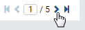

Data Model/Functions¶
The Data Model/Functions page allows user to
- manage functions and function level
List functions¶
In browser, log in to Izenda as a user with Data Model permission.
Click Settings, then Data Setup then Data Model in the left menu.
Select the Setting Level: either System or a specific tenant.
Click Functions in the Middle Panel.
Visible functions from all connections will be displayed.
By default, only the first page with 10 items are displayed. To see more, either use the next page icon
Fig. 90 Data Model - Next Page
or select a larger number in Items per page box.

Fig. 91 Data Model - Items per page
{kind=link}
{kind=link}
Search for functions¶
The Search box at the top allows user to search for specific functions.
-
Select a specific element to search for in the dropdown on the left of the Search box. Default is All.
Type a partial name and click the search icon (üîç).
Only the matching functions will be displayed.
{kind=link}
Set function level¶
There are 2 types of function level:
Field Level means whether the function is allowed to be used in field level in Report Designer Module.

Fig. 93 Data Model - Function Field Level is disabled
When a function requires more than one input parameter, it cannot be used in field level and this option will be disabled.
Expression Level means whether the function is allowed to be used in calculated columns.
- Tick the respective checkbox to allow or untick to reject.
- Continue to set for other functions in the same page.
- Click Save button at the top, then click OK in the confirmation pop-up.